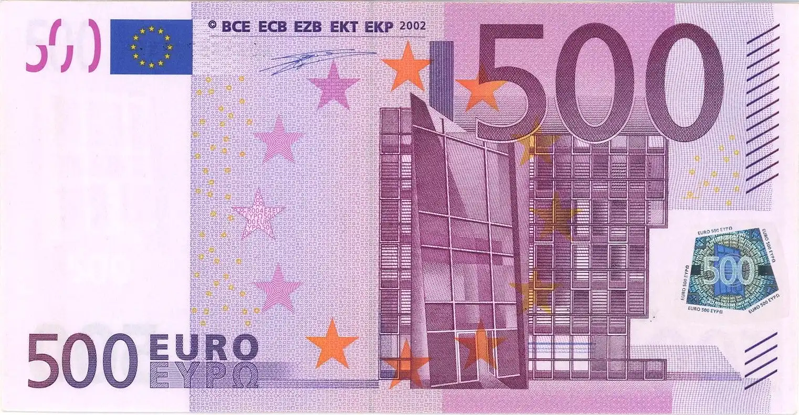
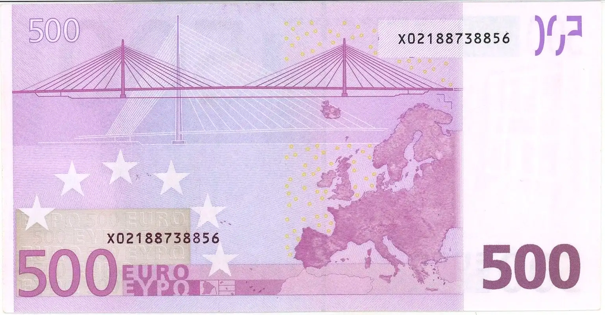

Banknotes EUR
€500 2002-2014
Series: The Ages and Styles of Europe
Obverse

Description
On the front are shown windows and doorways. They symbolise the European spirit of openness and cooperation. The banknote shows the architectural style from the classical period in Europe's history, but does not show any actual existing monuments or bridges.
Scripts
Greek, Latin
Lettering:
BCE ECB EZB EKT EKP 2002
5 EURO ΕΥΡΩ
Reverse

Description
The bridges on the reverse of the Europa banknotes symbolize communication between the people of Europe and between Europe and the rest of the world. The reverse also contains a map of Europe and the stars of the European flag.
Scripts
Greek, Latin
Lettering:
5 EURO ΕΥΡΩ